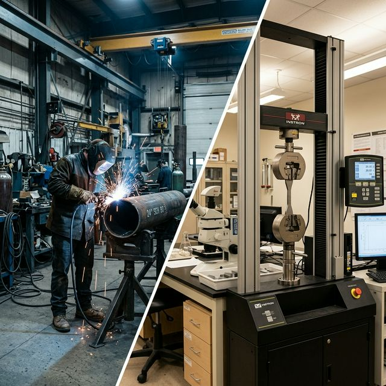

Disclaimer: This is a fictional market scenario designed to illustrate the structural dynamics of AI-brokered consortium assembly. The characters, companies, and events are invented. The market forces, the capability gaps, and the platform architecture are real.
There is a tensile testing machine in the metallurgy lab at Cambrian College’s trades campus in Sudbury, Ontario. It is a Tinius Olsen 300kN universal testing machine — hydraulic, floor-mounted, calibrated annually by an accredited metrology service to ISO 7500-1. It can pull a standard test coupon apart at a controlled rate and record the force-displacement curve with sub-Newton precision: yield strength, ultimate tensile strength, percent elongation, reduction of area. It can also run guided bend tests on weld coupons — face bends, root bends, side bends — the tests that determine whether a welding procedure produces a joint that will hold under load or crack open under stress.
The machine runs about three hours a day during the academic term. Monday and Wednesday lab sessions for second-year welding students. A Thursday afternoon for the metallurgy instructor’s research project. During exam periods and the summer break, it runs less — sometimes not at all for weeks. The rest of the time, it sits in a climate-controlled lab behind a locked door, depreciating at approximately $12,000 per year whether or not anyone uses it.
Across the hall, there is a Struers metallographic preparation station — a grinder-polisher with automated sample preparation, a Nikon Eclipse optical microscope with digital imaging, and a sample mounting press. This equipment enables metallographic examination: the art of cutting, polishing, etching, and examining a cross-section of a weld under magnification to evaluate its microstructure, fusion characteristics, heat-affected zone, and the presence of defects invisible to the naked eye. The metallurgy instructor, Dr. Anil Chandra, can read a weld micrograph the way a cardiologist reads an echocardiogram — decades of pattern recognition compressed into a two-minute evaluation.
This capacity — the testing machine, the preparation equipment, the calibrated instruments, the expert interpretation — is precisely what a welding shop 300 kilometres north in Timmins desperately needs right now. But the welding shop doesn’t know the lab exists. And the lab doesn’t know the welding shop needs it.
The Welder’s Problem
Northern Cross Fabrication is a twelve-person structural steel and piping shop on the outskirts of Timmins, Ontario. They do mine site structural steel, forestry equipment repair, pressure piping for pulp mills, and the occasional custom fabrication job for the natural gas sector. The shop is run by Dave Olynyk, a CWB-certified welding inspector and third-generation ironworker whose grandfather helped build the gold mines that still define Timmins’s industrial identity.
Dave has a problem that is costing him money every week it remains unsolved.
A new contract has come in from Domtar’s Espanola pulp mill: replacing a section of high-pressure steam piping. The piping is ASTM A106 Grade B carbon steel, and the weld joints must meet the requirements of CSA W59 — the Canadian welding standard for steel construction. Dave’s shop has the welders, the equipment, and the experience. What they don’t have is a qualified welding procedure for the specific joint configuration the contract requires: a single-V groove weld on 8-inch Schedule 80 pipe using E7018 SMAW (shielded metal arc welding) electrodes, welded in the 6G position (pipe at 45 degrees — the most difficult fixed-position pipe weld).
Under CSA W59 and CWB (Canadian Welding Bureau) requirements, Dave cannot use a welding procedure unless it has been formally qualified through destructive testing. That means someone welds a test coupon — an actual piece of pipe welded exactly according to the proposed procedure — and then a testing laboratory destroys it. Cuts it apart. Pulls it in tension to see if it breaks in the weld or the base metal. Bends it in a guided die to see if the root and face of the weld crack. Possibly sections it for a metallographic examination to verify the fusion profile and check for sub-surface defects.
The test results are recorded in a Procedure Qualification Record (PQR) — a legal document that certifies the welding procedure produces acceptable joints under the specified conditions. Without the PQR, Dave cannot weld the Domtar contract. Without the Domtar contract, he may have to lay off two welders for the winter.
Here is where it gets complicated.
The nearest commercial materials testing laboratory is Element Materials Technology in Mississauga — the western suburbs of Toronto, nearly 700 kilometres south. Dave has used them before. The process works like this: he welds the test coupons in his shop, packages them in a wooden crate, ships them by Purolator freight (two to three business days), waits for the lab to schedule the tests (one to three weeks, depending on their backlog), then waits for them to ship the results back. Total time: three to five weeks. Cost: $1,500 to $2,500 for the testing alone, plus $200-300 in shipping. If a test fails — say the root bend opens up a 4mm crack, indicating incomplete fusion at the root pass — Dave has to modify the procedure, weld new coupons, ship again, wait again. Each iteration adds another month to the timeline.
The alternative is to drive the coupons to Toronto himself. That is a seven-hour drive each way, plus fuel, plus a night in a hotel, plus whatever the lab charges for a rush job. He has done it. Once.
Dave knows there must be testing equipment closer to Timmins. Northern College has a welding program. Laurentian University in Sudbury has a materials science department. Cambrian College in Sudbury is only three hours south instead of seven. But he doesn’t know whether any of these institutions have the right equipment, whether it’s calibrated and accredited, whether they’re allowed to do external testing, or how to even ask. He has looked at their websites. The Northern College website describes a “state-of-the-art welding facility.” The Cambrian website lists “metallurgy laboratories” under the trades program. None of them say: “We have a certified tensile testing machine available for industrial clients. Here’s how to book it.”
This is the opacity problem. The testing capacity exists. The need exists. But neither side has a mechanism to discover the other, and neither side has an incentive to create one.
The Lab’s Problem
Dr. Anil Chandra’s budget is under pressure. Cambrian College’s trades campus in Sudbury has invested significantly in laboratory infrastructure — the testing machine, the metallography station, the portable hardness tester, the chemical analysis equipment — because the welding and metallurgy programs produce graduates who must be competent with this equipment. The capital investment was justified by educational outcomes.
But the operating costs are real. Calibration services run $3,500 per year for the tensile machine alone. Consumables — polishing media, etchants, mounting resin, test fixtures — add another $4,000. The annual maintenance contract on the Tinius Olsen is $6,200. Insurance liability coverage for third-party testing adds a premium. Total annual cost to keep the lab operational: approximately $28,000, exclusive of Anil’s salary.
The university’s administration has gently suggested that Anil explore “industry engagement” — a polite academic euphemism for “find some external revenue to justify the equipment we bought you.” Anil would like nothing more. He knows the rural manufacturing sector across northern Ontario needs testing services. He has had fabrication shops call him directly — but sporadically, unpredictably, and always with the same question: “Can you do this? How much? How fast?” And always followed by a long silence, because neither Anil nor the calling shop has any way to efficiently manage the logistics of sample receiving, chain of custody, testing scheduling, reporting, invoicing, and — critically — liability.
If a test result is wrong — if Anil’s lab certifies a weld as acceptable and the joint later fails in service — the liability exposure is significant. Commercial testing labs carry ISO/IEC 17025 accreditation and substantial professional liability insurance precisely because their test results are regulatory instruments, not academic exercises. Anil’s lab is not ISO 17025-accredited. The university’s general liability insurance does not explicitly cover third-party materials testing.
So the phone calls come, and Anil explains the situation, and the fabrication shop sighs and ships the coupons to Toronto.
This is the trust problem layered onto the opacity problem. Even when the parties find each other, the institutional framework — accreditation, insurance, liability — doesn’t exist to let them transact.
What the Platform Changes
Now imagine that the Ontario Manufacturing Coalition — a consortium of the Ontario College of Trades, the Ontario chapter of the Canadian Welding Bureau, and the Council of Ontario Universities — has deployed a materials testing marketplace on MarketForge infrastructure, populated with sponsor-curated domain knowledge and designed to solve exactly this class of coordination failure. The specific characters and events are fictional, but the testing requirements, accreditation frameworks, and geographic realities of rural manufacturing in northern Ontario are real.
1. Dave’s Listing
Dave opens the platform on his phone, sitting in his shop office between shifts. The system asks him to describe his testing need — not in the language of ISO standards and ASTM designations, but in shop-floor English:
“I need a weld procedure qualification — 8-inch Schedule 80 A106 Grade B pipe, E7018 SMAW, 6G position. I need tensile tests and guided bend tests per CSA W59. I’ve already welded the coupons. I need results within two weeks if possible.”
The platform’s AI extracts the structured requirements from this natural-language description:
- Test type: Procedure Qualification Record (PQR)
- Base material: ASTM A106 Grade B (carbon steel, seamless pipe)
- Electrode: E7018 (low-hydrogen basic SMAW)
- Joint configuration: Single-V groove
- Position: 6G (45° fixed pipe)
- Required tests: Transverse tensile (2 specimens), guided bend — face and root (4 specimens per CSA W59 Table 5.2)
- Governing standard: CSA W59-18 Clause 5
- Timeline: Urgent — results needed within 14 days
- Sample status: Coupons already welded, ready to ship
Dave also shares, in a private matching layer, his budget ceiling ($1,200 — lower than Toronto commercial rates, but he’s hoping the shorter supply chain compensates), his willingness to drive the coupons to a lab within a six-hour radius rather than shipping, and his preference for a lab that can also provide metallographic examination if the bend tests show anything borderline.
2. Anil’s Profile
Dr. Chandra registered his laboratory on the platform three months ago, at the suggestion of the Ontario College of Trades representative who visited Cambrian’s trades campus for a program review. The platform built his lab’s capability profile through a structured interview:
- Equipment: Tinius Olsen 300kN universal testing machine (tensile, compression, bend), Struers metallographic station, Nikon Eclipse microscope, Wilson Rockwell hardness tester
- Calibration status: UTM calibrated to ISO 7500-1, certificate current (expiry: November 2026). Calibration performed by Transcat Metrology, Toronto
- Testing standards competence: CSA W59, CSA W47.1, ASME Section IX, ASTM E8/E8M (tensile), ASTM E190 (guided bend), ASTM E3/E407 (metallographic prep and etching)
- Accreditation: Not ISO/IEC 17025 accredited (academic lab)
- Insurance: University general liability; no specific third-party testing coverage
- Availability: Variable — academic semester constraints. Generally available Tuesday/Thursday afternoons and during summer break. Not available during exam periods (April 15–May 5, December 1–15)
- Geographic service area: Sudbury hub; can receive samples by courier or in-person drop-off
- Pricing: $80–120/hour for equipment use; $150/hour for supervised testing with expert interpretation
- Turnaround: 3–5 business days from sample receipt for standard PQR test sets
Anil also uploaded his lab’s most recent calibration certificates, his own CV (Ph.D. in Materials Engineering, 18 years of welding metallurgy experience, CWI-certified), and a sample test report from his lab — the format he uses for internal academic work.
The platform noted the accreditation gap and flagged it — not as a disqualification, but as a condition that must be addressed before the match is made. The Knowledge Slot surfaces: “For CWB-submitted PQRs, the testing laboratory must be either ISO/IEC 17025 accredited or operating under the supervision of a P.Eng. with demonstrated competence in the test methods. Alternative: the test results can be witnessed and countersigned by a CWB-certified welding inspector.”
This is information that Anil didn’t know. It changes his position: if Dave Olynyk (who is a CWB-certified welding inspector) witnesses the testing in person, the results are acceptable for PQR submission — no ISO 17025 accreditation required. Dave driving three hours south to Sudbury to witness a day’s testing is dramatically different from Dave shipping coupons to Toronto and waiting three weeks.
3. The Match
The platform’s semantic matching engine evaluates Dave’s testing requirements against laboratory capability profiles within his specified radius. The match against Cambrian is structural: the UTM handles the tensile loads, the bend test fixtures accommodate Schedule 80 pipe, Anil’s CSA W59 competence is documented, and the turnaround fits Dave’s 14-day window.
The match is conditional on one requirement: because the lab is not ISO/IEC 17025 accredited, CWB requires that a certified welding inspector witness the tests. Dave is a CWB-certified inspector. Driving three hours to Sudbury to witness a day’s testing is a fundamentally different proposition from shipping coupons to Toronto and waiting three weeks.
Both parties receive match notifications. Dave sees a lab three hours south with calibrated equipment, an experienced supervisor, and a cost estimate of $600–$900 — less than half what Toronto charges. Anil sees a fabrication shop in Timmins with coupons ready, a willing driver, and a CWB inspector who resolves his accreditation constraint. For Anil, it is billable equipment hours and professional time — the “industry engagement” his administration has been requesting.
4. What the Platform Knows
When the Ontario Manufacturing Coalition configured the platform, they populated the Knowledge Slot with domain-specific reference material curated by the CWB and the Ontario College of Trades:
- CWB Bulletin W59-002: the alternative supervision provisions for non-accredited laboratories — the conditions under which a CWB inspector can witness testing at a non-17025 lab, and the documentation requirements. This is the regulatory workaround that makes the entire match viable.
- Liability and insurance guidance: the Coalition’s group professional liability insurance policy, covering participant labs performing testing within the platform’s documented scope — addressing the specific insurance gap that had previously prevented college and university labs from accepting external work.
The insurance detail solves Anil’s second problem. Under the Coalition’s umbrella policy, his lab is covered for testing performed within the platform’s documented procedure. The college’s risk management office has approved the arrangement.
5. The Testing Day
Dave drives south from Timmins with six test coupons — two tensile blanks and four bend specimens. Three hours later, he is in Anil’s lab at the Cambrian College trades campus. As the witnessing CWB inspector, he verifies calibration currency before testing begins.
The tensile tests pass cleanly — both specimens fail in the base metal, outside the weld, at 497 and 503 MPa. The face bends pass. The root bends: the first passes cleanly, but the second shows a tiny 1.5mm surface indication. Anil reaches for the metallographic preparation station.
Twenty minutes later, they are looking at a polished and etched cross-section under the microscope. The indication is a shallow gas pocket — well within acceptance criteria. But the micrograph reveals something else: the heat-affected zone grain structure suggests the interpass temperature was running high.
“Your procedure says interpass temperature max 250°C,” Anil observes. “This microstructure looks like your welder was running closer to 300. It passed this time — but in cold weather service, you might want to tighten that up.”
This is the value that no commercial lab in Toronto provides. Element Materials Technology would have reported “Pass” and moved on. Anil offers interpretive insight because this is one test set, not a thousand, and because he is a metallurgist who teaches welding students, not a technician running a production line.
By 2:00 PM, Dave has his completed test reports and drives back to Timmins with the PQR documentation that secures the Domtar contract. Total cost: $750 for the testing, $80 in fuel, and a day of his time. He would not have the documentation for another three weeks if he had used Toronto.
6. What Makes This a Thin Market Story
Opacity — No directory of available testing capacity at Ontario colleges and universities exists; these institutions have no sales infrastructure, no pricing model, and no way to manage the liability. Geographic distance — The market isn’t thin because testing capacity doesn’t exist regionally; it’s thin because neither side can see what’s within economical range. Sudbury is three hours from Timmins; Toronto is seven. Trust — The Knowledge Slot surfaced a regulatory workaround — CWB inspector witnessing — that preserved the validity of results without a $25,000 accreditation process. Temporal distance — Testing needs arise unpredictably; lab capacity fluctuates with academic schedules. The platform accounts for this mismatch, surfacing available capacity when demand appears.
What makes a thin market tick? → · The MarketForge platform → · The Cosolvent open protocol →